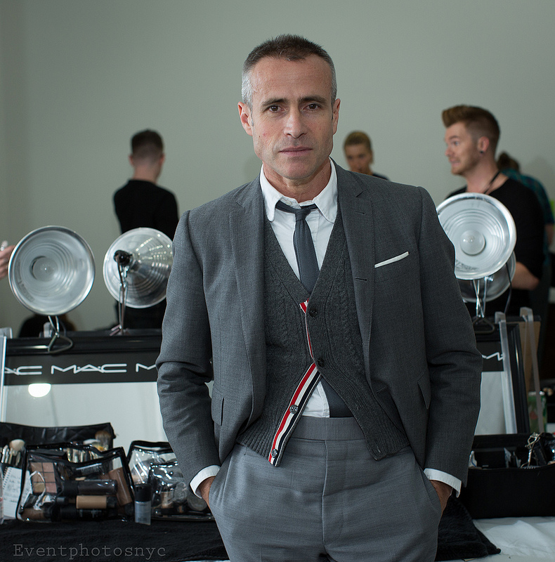

Photo credit: eventphotosnyc via Foter.com / CC BY-NC-ND |
BORN
1965, Allentown, Pennsylvania
NATIONALITY
United States
OCCUPATION
Fashion Designer of Thom Browne, Brook Brothers' Black Fleece, Moncler Gamme Bleu, Club Monaco
Thom Browne ’s stunted male silhouette and his otherworldly creations for women have placed him at the vanguard of New York’s fashion scene. His aesthetic and theatrical presentations has garnered Browne worldwide recognition and has led to extremely successful collaborations with Brooks Brothers and Moncler Gamme Bleu.
1988-Graduated from University of Notre Dame.
1997-Pursued a career in the fashion industry.
1998-2004 worked in Ralph Lauren.
2003-Opened Thom Browne's Mens made-to-measure store in New York.
2003-Debuted his womenswear collection.
2006-Council of Fashion Designers of America (CFDA) Menswear Designer of the Year.
2007-Creative Director of Brook Brothers' Black Fleece.
2008-GQ 'Designer of the Year'.
2008-Creative Director of Moncler Gamme Bleu.
2013-Council of Fashion Designers of America (CFDA) Menswear Designer of the Year.
|